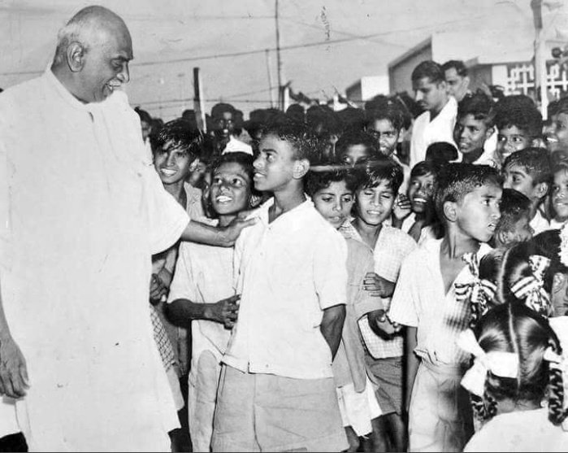

Kamarajar, selfless leader, reformed education system and increased literacy rates in Tamil Nadu during 60s.
A quick look at Kamarajar’s life:
1903 – Born in Virudhunagar, Tamil Nadu, India
1919 – At the age of 16, enrolled in Congress and did party work such as organizing meetings, inviting speakers and collecting funds for party.
1923 – Met with Sathyamurthy and Rajaji were the tallest leaders of Madras Presidency and adopted Sathyamurthy as his political guru.
1930 – Took part in Salt Satyagraha movement against ruling british government and sentenced to two years of imprisonment.
1940 – Become the president of Tamil Nadu congress and held the post until 1954.
1954 – Become the chief minister of Tamil Nadu and which is described as "Golden Age" in the history of Tamil Nadu.
1954 - 1963 – Major reform to provide free and compulsory eductaion to all children in rural areas.
1954 - 1963 –Ensured all villages to have atleast one chool and one teacher. Introduced free mid day meal scheme fo both rural and urban children which later became a central scheme for whole of India in 1980.
1954 - 1963 –Introduced and succeeded with lot of Irrigation schemes and converted the food deficit state to food surplus state.
1963 – Resigned his chief minister post and started working on party develooment as the congress started losing its vigor in local state.
1964 – As a Kingmaker, he supported Shasthri and made him the president of India.
1966 – After Shasthri demise, he supported Mrs. Indira Gandhi and made her the president of India.
1975 – Kamarajar died on 1975, the selfless leader at the time of his death he only owned few dresses and books.
1976 – Posthumously Awarded Bharat Ratna, the highest award of Indian Government.
"Mr Kamarajar is one of the greatest political leaders in all the countries of the free world."
- Hubert Humphrey, Former Vice-president of the United States